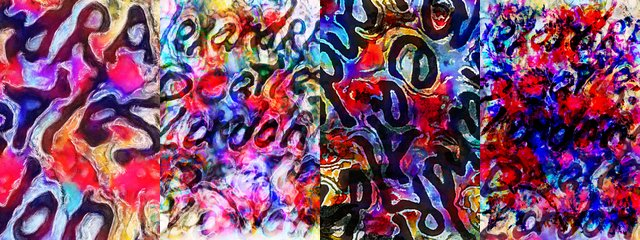

by Hulki Okan Tabak · Async Art Master #4040 · four-phase · time rule: UTC
Updates four times a day to reflect sunrise / day / sunset / night cycles.

Sunrise 06:00–06:59 · Day 07:00–17:59 · Sunset 18:00–18:59 · Night 19:00–05:59 (UTC)
The full-size files live on IPFS; each is linked on three public gateways, in the order to try them (gateway.pinata.cloud, ipfs.io, dweb.link). Every line says what our own check found: 5 not pinned by us yet, 1 our own copy, pinned here and verified on upload.
QmZyLwofZFnLb5… gateway.pinata.cloud · ipfs.io · dweb.link — not pinned by us yet, checked 2026-09-23 09:13QmPBwfZL6UUCrR… gateway.pinata.cloud · ipfs.io · dweb.link — not pinned by us yet, checked 2026-09-23 09:13QmYFPQdGKdjYSB… gateway.pinata.cloud · ipfs.io · dweb.link — not pinned by us yet, checked 2026-09-23 09:13Qmcq2wRDf5dm4g… gateway.pinata.cloud · ipfs.io · dweb.link — not pinned by us yet, checked 2026-09-23 09:13bafybeiarq7bxu… gateway.pinata.cloud · ipfs.io · dweb.link — our own copy, pinned here and verified on upload, checked 2026-09-22QmWr6TFSp1XxXP… gateway.pinata.cloud · ipfs.io · dweb.link — not pinned by us yet, checked 2026-09-23 09:13QmPBwfZL6UUCrR… gateway.pinata.cloud · ipfs.io · dweb.link — not pinned by us yet, checked 2026-09-23 09:13QmPBwfZL6UUCrR… gateway.pinata.cloud · ipfs.io · dweb.link — not pinned by us yet, checked 2026-09-23 09:13Qmcq2wRDf5dm4g… gateway.pinata.cloud · ipfs.io · dweb.link — not pinned by us yet, checked 2026-09-23 09:13QmZyLwofZFnLb5… gateway.pinata.cloud · ipfs.io · dweb.link — not pinned by us yet, checked 2026-09-23 09:13QmYFPQdGKdjYSB… gateway.pinata.cloud · ipfs.io · dweb.link — not pinned by us yet, checked 2026-09-23 09:13I have often wondered how parts make up a whole. I have written about it. I have actually written a mini poem about it and published it on Medium. I've minted another such into a different sort of NFT here on Async Art. This piece is another divide and don't conquer one. Loosely based on my grafitti photographs from Abbey Road Studios' walls, I focus taking bits out of the original photo and re-creating the linked pieces for this work. I sincerely wonder that if I live and it's years later that the art market boom of NFT would have happened to the extent that experimental works on Async Art have also been sweeped. I really would hope to see the day and f*** talk about it for fun over…
async.art · OpenSea · Etherscan
Generated archive pages. Content identifiers point to the public IPFS network.